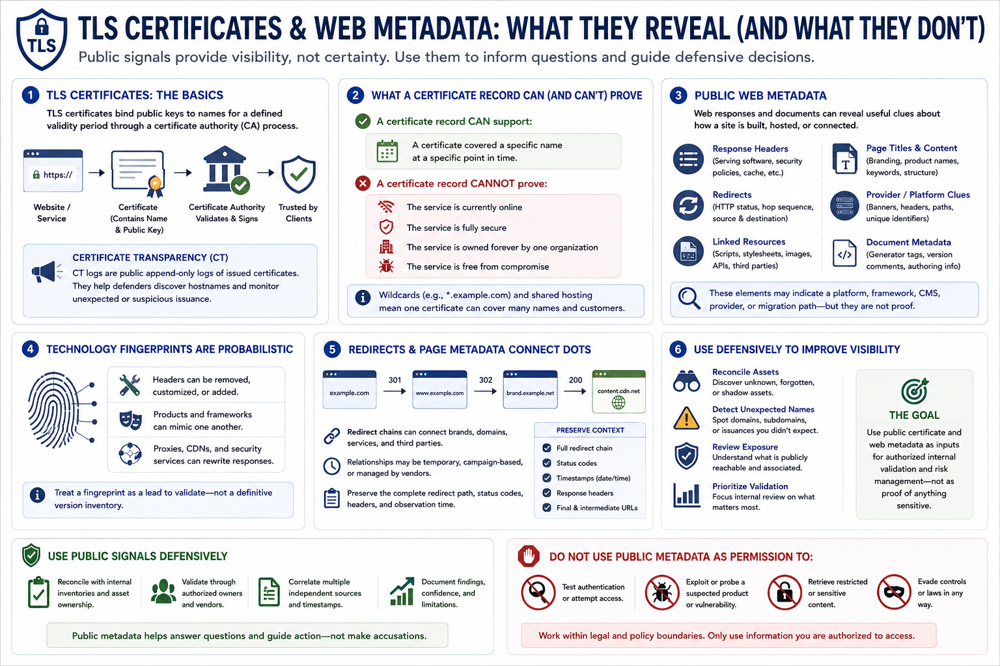

Certificates and Web Metadata
Connecting to LMS... Progress: in progress

Narration
TLS certificates bind public keys to names for a defined validity period through a certificate authority process. Certificate transparency logs publish records of many issued certificates, helping defenders discover hostnames and monitor unexpected issuance.
A certificate record can support that a certificate covered a name at a point in time. It does not prove the service is currently online, fully secure, owned forever by one organization, or free from compromise. Wildcards and shared hosting add further ambiguity.
Public web metadata includes response headers, redirects, page titles, linked resources, and document metadata. These elements may indicate a hosting platform, application framework, content-management system, provider, or migration path.
Technology fingerprints are probabilistic. Headers can be removed or changed, products can mimic one another, and intermediary services can rewrite responses. Treat a fingerprint as a lead to validate, not a definitive version inventory.
Redirects and page metadata can connect brands, domains, and services, but relationships may be temporary or managed by a third party. Preserve complete redirect context and observation time instead of citing only the final destination.
Use certificate and web metadata defensively to reconcile assets, detect unexpected names, review exposure, and prioritize authorized internal validation. Do not use public metadata as permission to test authentication, exploit a suspected product, or retrieve restricted content.